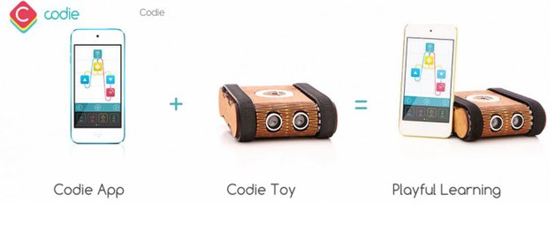

O robô de brinquedo que ensina as crianças a programar
Saber programar é uma habilidade que se mostra cada dia mais necessária, mesmo para quem não trabalha diretamente com linhas de código. Para tornar o aprendizado da lógica de programação mais simples para as crianças, que hoje já nascem rodeadas por tablets, smartphones e computadores, foi desenvolvido o Codie, um robô que une diversão e aprendizado. O Codie é um brinquedo totalmente personalizável que, conectado ao smartphone, pode ser transformado a partir de comandos ditados pela criança. Usando uma linguagem de programação lúdica e uma interface bastante simples, a criança pode experimentar na prática os efeitos de cada comando. Gradualmente, a criança tem acesso a novos conceitos de programação, que possibilitam movimentos mais complexos e envolvem uma quantidade maior de variáveis – o robô pode funcionar como um despertador ao perceber a luz do dia, por exemplo. Composto por diversos sensores, o produto garante novas brincadeiras e a base para um aprendizado que se prova essencial nos dias de hoje.
 Para mais informações